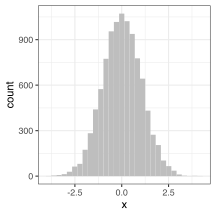
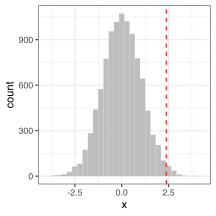
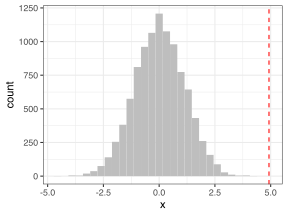
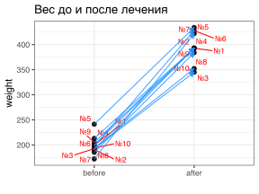
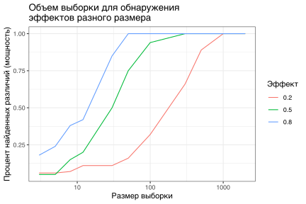
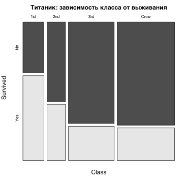
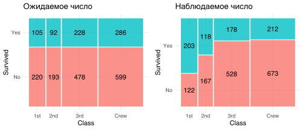
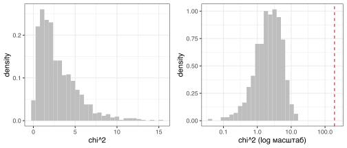
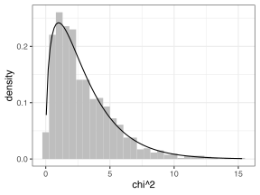

Тесты - продолжение
Преамбула
suppressPackageStartupMessages(library(tidyverse))
suppressPackageStartupMessages(library(magrittr))
suppressPackageStartupMessages(library(cowplot))
suppressPackageStartupMessages(library(rstatix))
suppressPackageStartupMessages(library(ggrepel))
library(rio)
theme_set(theme_bw())Данные могут относиться к разным типам. Методы обработки данных зависят от типа данных.
- количественные
- количественные непрерывные данные: например, длина тела
- количественные дискретные данные: например, число тычинок
- качественные
- значения можно отсортировать: “молодой” < “среднего возраста” < “старый”, однако нельзя сказать, во сколько раз “молодой” меньше “старого”
- значения нельзя отсортировать: самка/самец, есть/нет и т.п.
Количественные (непрерывные) переменные
Разница между группами
Если перед нами имеются две группы измерений и мы хотим понять, есть ли достоверные различия между этими группами, нам нужно придумать, как эту разницу измерить. Обычно используются следующие варианты статистик (значений, которые вычисляются для выявления эффекта)
- разница между средними групп \(\bar{x}_1+\bar{x}_2\)
- разница между средними групп деленная на разницы значений (разброс) внутри группы, например \(\big(\bar{x}_1+\bar{x}_2\big)/\text{SE}_\text{pooled}(x_1, x_2)\) (или квадраты этих разниц)
Нулевая гипотеза и нуль-распределение
После того, как мы поняли, каким образом мы будем измерять разницу между группами, надо разобраться с тем, какую разницу считать достоверной. Для этого надо выяснить, какие значения принимает данная статистика при условии, если разницы между группами нет и все элементы принадлежат к одной группе (это называется нуль-распределение, т.е. распеделение значений статистики если различий между группами нет).
Предположим, у нас есть выборка значений веса для самок мышей, которые едят обычный корм. Экспериментаторы хотели узнать, влияет ли жирность корма на вес и получили данные о весе самок мышей, которых кормили жирным кормом. Вопрос: есть ли достоверная разница в весе? Для начала посмотрим, если случайно разбивать мышей на группы, считать разницу между групповыми средними, какие значения будут типичными для таких межгрупповых средних при условии отсутствия реальной разницы между группами. Гипотеза об остутствии эффекта, т.е. случайности различий, есть нулевая гипотеза (H0), а распределение полученных значений различий случайных групп будет называться нуль-распределением.
mice = import("data/mice_pheno.csv") # https://github.com/lapotok/biochemstat2019/mice_pheno.csvset.seed(1)
mice %<>%
filter(Sex == "F") %>%
mutate(Diet = recode(Diet,
chow = "control",
hf = "high_fat")) # меняем обозначения
control = mice %>% filter(Diet == "control") %>% pull(Bodyweight)
high_fat = mice %>% filter(Diet == "high_fat") %>% pull(Bodyweight)
# null distribution
set.seed(1)
N = 10000 # число симуляций
n = 20 # размер выборки
null = numeric(N) # значения статистики при нулевой гипотезе
for (i in 1:N) {
group1 = sample(control, n)
group2 = sample(control, n) # группы генерируются случайно
group_diff = mean(group1) - mean(group2)
null[i] = group_diff
}
tibble(x=null) %>% ggplot() + geom_histogram(aes(x=x), fill="gray", bins=30)
Теперь мы можем посмотреть как часто может встретиться то или иное значение средних между двумя группами, между которыми нет разницы. Функция quantile позволяет найти такое значение [в нашем случае значение средних между группами], меньше которого находится заданный процент данных, например,
quantile(null, 0.25)#> 25%
#> -0.6795т.е. среди полученных разниц между средними случайных групп значения \(\leq -0.6795\) встречаются в \(25\%\) случаев.
Нуль-распределение и наблюдаемый эффект
Также можно можно сравнить наблюдаемую разницу между группами с нуль-распределением, чтобы понять, с какой вероятностью такая (или более значительная) разница могла бы возникнуть случайно.
observed_diff = mean(high_fat) - mean(control)
observed_diff#> [1] 2.375517tibble(x=null) %>% ggplot() + geom_histogram(aes(x=x), fill="gray", bins=30) +
geom_vline(xintercept = observed_diff, col="red", linetype="dashed")
Посмотрев глазами на данный график, мы видим, что не так уж часто случайно сгенерированные группы имеют такое различие (см. гистограмму), то есть маловероятно, что наблюдаемые межгрупповые различия между мышами с разной диетой (красная линия) имеют случайный характер.
Эта техника анализа, основанная на генерации случайных выборок, относится к большой группе методов с умным названием Монте-Карло симуляции.
Но как понять из симуляции нуль-распределения, с какой вероятностью такие или бóльшие различия могли бы возникнуть случайно? Она равна доле значений разниц из нуль-распределения, которые \(\geq\) наблюдаемой разнице. Т.е. если всего мы сгенерировали \(N = 10000\) значений разниц, а из них \(M = 232\) были больше по модулю, чем модуль наблюдаемого различия, то Монте-Карло оценка вероятности такого или большего различия при условии отсутствия разницы между группами (p-value) будет \(\textit{p-value} = M/N = 232/10000 = 0.232\).
Однако математики показали, что для более правильной оценки лучше использовать модифицированную формулу \(\textit{p-value} = (M+1)/(N+1)\).
M = sum(abs(null) >= abs(observed_diff))
N = length(null)
M/N # MC p-value (approx)#> [1] 0.0232(M+1)/(N+1) # MC p-value (corrected)#> [1] 0.02329767Типы сравнения: 1) равно - не равно, 2) больше, 3) меньше (одно- и двусторонний тест, one vs two-tailed test)
В данном примере, когда мы рассчитывали p-value, задаваемый нами вопрос звучал как “С какой вероятностью могло бы случайно возникнуть такое или большее (по модулю) различие?”. При этом нас интересует есть ли разница в принципе, не важно, больше или меньше первая группа, чем вторая (это называется двусторонний тест).
Однако в данном примере мы ожидаем, что более жирная пища увеличит массу мышей, поэтому нас скорее интересуют достоверно ли увеличение массы мышей на жирной диете. Для расчета p-value мы сформулируем этот вопрос как “С какой вероятностью могла бы случайно первая группа оказаться настолько больше чем вторая?” (это называется односторонний тест с альтернативной гипотезой, что перавя группа больше второй).

## two-tailed test
# *вопрос*: с какой вероятностью разница между случайными группами
# будет по модулю по больше наблюдаемой
# или есть ли разница между группами
M = sum(abs(null) >= abs(observed_diff))
N = length(null)
(M+1)/(N+1) # MC p-value (corrected)#> [1] 0.02329767# one-tailed test (upper-tailed), alternative: upper
# *вопрос*: с какой вероятностью разница между случайными группами
# будет больше наблюдаемой
M = sum(null >= observed_diff)
N = length(null)
(M+1)/(N+1) # MC p-value (corrected)#> [1] 0.01179882# (p-value меньше, т.к. в эту вероятность не включается вероятность того, что значение больше наблюдаемого)
# one-tailed test (lower-tailed), alternative: lower
# *вопрос*: с какой вероятностью разница между случайными группами
# будет меньше наблюдаемой
# (в нашем случае маловероятно уменьшение веса при жирной диете)
M = sum(null <= observed_diff)
N = length(null)
(M+1)/(N+1) # MC p-value (corrected)#> [1] 0.9883012Как видно из сравнения результатов, получающихся из использования одно- и двусторонних тестов, при одной и той же наблюдаемой разнице более низким p-value оказался для одностороннего теста, т.к. мы задавали более конкретный вопрос. Вероятность, что разница будет какой-то (позитивной, негативной, но не нулевой) явно будет больше, чем вероятность того, что разница будет позитивной.
Перестановочный тест
Ранее мы проводили симуляции с использованием “генеральной совокупности” с целью понять, как будут себя вести выборки. А теперь проанализируем одну такую выборку.
Данный тест проверяет, насколько данное разбиение на группы “лучше” случайного (если не особо - значит различий между группами нет). Нулевая гипотеза гласит, что обе группы взяты из одной генеральной совокупности и что наблюдаемая разница между группами не будет принципиально больше, чем типичное значение разницы между случайно сгенерированных групп, где значения взяты и перемешаны из обеих исходных групп. Т.к. для построения нуль-распределения мы используем значения из обеих исходных групп, мы учитываем их общий разброс значений.
# создадим выборки контроля и опыта
set.seed(1)
n = 20
high_fat_sample = sample(high_fat, n)
control_sample = sample(control, n)
observed_diff = mean(high_fat_sample) - mean(control_sample)
observed_diff#> [1] 4.9245total = c(control_sample, high_fat_sample)
# null distribution
N = 10000 # число симуляций
null = numeric(N) # значения статистики при нулевой гипотезе
for (i in 1:N) {
group1 = sample(total, n)
group2 = sample(total, n) # группы генерируются случайно
group_diff = mean(group1) - mean(group2)
null[i] = group_diff
}
tibble(x=null) %>%
ggplot() +
geom_histogram(aes(x=x), fill = "gray", bins = 30) +
geom_vline(xintercept = observed_diff, col = "red", linetype = "dashed")
Теперь мы можем аналогичным образом посчитать Монте-Карло оценку p-value для перестановочного одностороннего теста с альтернативной гипотезой, что в группе мышей с жирной пищей средняя масса больше.
M = sum(null > observed_diff)
N = length(null)
(M+1)/(N+1) # MC p-value#> [1] 9.999e-05Мы получили бóльшее значение p-value чем в аналогичном тесте, где нуль-распределение расчитывали только по контрольным мышам. В данном случае общий разброс в данных больше, ошибки среднего больше и детектировать сигнал сложнее.
В R есть функция, которая осуществляет этот тест
# сначала переформатируем данные в табличку
mice_30 =
tibble(
groups = factor(rep(c("high_fat", "control"), times = c(n, n)),
levels = c("high_fat", "control")),
values = c(high_fat_sample, control_sample)
)
mice_30 %>% sample_n(6)#> # A tibble: 6 x 2
#> groups values
#> <fct> <dbl>
#> 1 high_fat 31.2
#> 2 high_fat 25.4
#> 3 high_fat 27.6
#> 4 control 28.1
#> 5 high_fat 31.2
#> 6 control 19.9# теперь применим саму функцию
coin::oneway_test(values ~ groups, mice_30, alternative = "greater")#>
#> Asymptotic Two-Sample Fisher-Pitman Permutation Test
#>
#> data: values by groups (high_fat, control)
#> Z = 3.1615, p-value = 0.0007849
#> alternative hypothesis: true mu is greater than 0coin::oneway_test(values ~ groups, mice_30, alternative = "greater") %>% coin::pvalue()#> [1] 0.000784919Тест Манна-Уитни (Уилконсона)
Мы хотим узнать, есть ли разница между группами, для которых предпосылка о нормальности распределения неверна, мы также можем использовать тест Манна-Уитни. Аналогично примеру выше проводим односторонний тест с альтернативной гипотезой о том, что среднее в первой группе больше среднего во второй (alternative = "greater").
wilcox_test(mice_30, values ~ groups, alternative = "greater")#> # A tibble: 1 x 7
#> .y. group1 group2 n1 n2 statistic p
#> * <chr> <chr> <chr> <int> <int> <dbl> <dbl>
#> 1 values high_fat control 20 20 318. 0.000706levels(mice_30$groups)#> [1] "high_fat" "control"Хочется отметить, что какая группа первая, а какая - вторая, определяется по группирующей переменной. Как правило, она имеет тип
factorи порядок уровней в нем можно определить функциейlevels(), а с использованием функцииfactor()можно менять очередность уровней.factor1 = as.factor(c("c", "a", "a", "c", "c", "b")) levels(factor1) # по умолчанию уровни по алфавиту#> [1] "a" "b" "c"factor2 = factor(factor1, levels = c("b", "c", "a")) levels(factor2)#> [1] "b" "c" "a"
\(t\)-тест
Если данные распределены нормально и есть выборка не очень маленькая, то можно использовать и параметрический тест - \(t\)-тест. Если распределение сильно отклоняется от нормального, то тогда этот тест может давать неверные результаты, основываясь на неправильных предпосылках. А если выборка маленькая, то какое угодно распределение похоже на нормальное, а также такая выборка может быть малорепрезентативной, поэтому более консервативный тест будет уместен.
t_test(mice_30, values ~ groups, alternative = "greater")#> # A tibble: 1 x 8
#> .y. group1 group2 n1 n2 statistic df p
#> * <chr> <chr> <chr> <int> <int> <dbl> <dbl> <dbl>
#> 1 values high_fat control 20 20 3.62 32.5 0.000497Варианты \(t\)-теста
- количество и тип групп
- одна группа (сравниваем среднее в группе с определенным значением \(\mu\))
- две группы (как у нас в примере)
- непарный тест - когда элементы обеих групп независимы
- парный тест - когда элементы связаны, например, одна и та же мышь до и после приема лекарства
- тип сравнения
- двусторонний тест (p-value отражает вероятность того, что такое или большее по модулю различие между группами могло получиться случайно, т.е. альтернативная гипотеза о неравенстве групп)
- односторонний тест (альтернативная гипотеза: среднее группы №1 больше среднего в группе №2)
### 50 оттенков t-теста
## одна группа: проверим гипотезу о том, что средний вес мыши более 24 унций
t_test(mice_30 %>% filter(groups == "control"), values ~ 1, mu = 24, alternative = "greater")#> # A tibble: 1 x 7
#> .y. group1 group2 n statistic df p
#> * <chr> <chr> <chr> <int> <dbl> <dbl> <dbl>
#> 1 values 1 null model 20 -1.45 19 0.918# p.value ~ 0.9 => не можем отвергнуть нулевую гипотезу о том, что средний вес не более 24
## две группы, непарный тест
t_test(mice_30, values ~ groups)#> # A tibble: 1 x 8
#> .y. group1 group2 n1 n2 statistic df p
#> * <chr> <chr> <chr> <int> <int> <dbl> <dbl> <dbl>
#> 1 values high_fat control 20 20 3.62 32.5 0.000993## две группы, парный тест
# генерируем данные:
# вес до приема лекарства
before = c(200.1, 190.9, 192.7, 213, 241.4, 196.9, 172.2, 185.5, 205.2, 193.7)
# вес после приема лекарства
after <-c(392.9, 393.2, 345.1, 393, 434, 427.9, 422, 383.9, 392.3, 352.2)
# переформатируем
paired_data = tibble(
mice_number = rep(1:10, times = 2),
group = factor(rep(c("before", "after"), each = 10), levels=c("before", "after")),
weight = c(before, after)
)
paired_data %>% head()#> # A tibble: 6 x 3
#> mice_number group weight
#> <int> <fct> <dbl>
#> 1 1 before 200.
#> 2 2 before 191.
#> 3 3 before 193.
#> 4 4 before 213
#> 5 5 before 241.
#> 6 6 before 197.# или так
paired_data_wide =
paired_data %>%
pivot_wider(names_from = group, values_from = weight, id_cols = mice_number)
paired_data_wide %>% head()#> # A tibble: 6 x 3
#> mice_number before after
#> <int> <dbl> <dbl>
#> 1 1 200. 393.
#> 2 2 191. 393.
#> 3 3 193. 345.
#> 4 4 213 393
#> 5 5 241. 434
#> 6 6 197. 428.
# парный тест по сути - это проверка того,
# что разница между соответствующими значениями отличается от нуля (или больше/меньше)
paired_data_wide =
paired_data_wide %>%
mutate(diff = after - before)
paired_data_wide %>% head()#> # A tibble: 6 x 4
#> mice_number before after diff
#> <int> <dbl> <dbl> <dbl>
#> 1 1 200. 393. 193.
#> 2 2 191. 393. 202.
#> 3 3 193. 345. 152.
#> 4 4 213 393 180
#> 5 5 241. 434 193.
#> 6 6 197. 428. 231.# (after-before) > 0 ?
t_test(paired_data_wide, diff ~ 1, mu = 0, alternative = "greater")#> # A tibble: 1 x 7
#> .y. group1 group2 n statistic df p
#> * <chr> <chr> <chr> <int> <dbl> <dbl> <dbl>
#> 1 diff 1 null model 10 20.9 9 0.0000000031# before < after ?
t_test(paired_data, weight ~ group, alternative = "less", paired = T)#> # A tibble: 1 x 8
#> .y. group1 group2 n1 n2 statistic df p
#> * <chr> <chr> <chr> <int> <int> <dbl> <dbl> <dbl>
#> 1 weight before after 10 10 -20.9 9 0.0000000031Величина эффекта и мощность \(t\)-теста
Достоверность различия между группами - это не единственное, что нас интересует. Также важным параметром является величина эффекта, то есть разница между средними, деленная на оценку стандартного отклонения. Т.е. различие может быть едва заметным на фоне разброса значений в данных, а может значительно перекрывать его. При этом различие как со слабой величиной эффекта может быть как достоверным, так и нет.
# для начала, напишем функцию для сравнения
compare_groups = function(n, mean1, mean2, sd_total, print_results = T){
my_samples = tibble( # создаем таблицу для сравнения
groups = rep(c(1,2), times = c(n, n)), # названия групп
values = c(rnorm(n, mean1, sd_total), rnorm(n, mean2, sd_total)) # симуляция 2 выборок
)
# считаем величину эффекта и печатаем ее значение
cohens_d(my_samples, values ~ groups) %>% pull(effsize) -> effect_size
if (print_results) cat("Effect size:", effect_size, "\n")
# считаем p-value и печатаем его значение (если надо!)
t_test(my_samples, values ~ groups) %>% pull(p) -> p_value
if (print_results) cat("P-value:", p_value, "\n")
# функция говорит, когда нулевая гипотеза отвергнута
invisible(p_value < 0.05)
}
set.seed(1)
### Пример №1: сильный и значимый эффект
compare_groups(n = 30,
mean1 = 50,
mean2 = 57,
sd_total = 10)#> Effect size: 0.8703056
#> P-value: 0.00135### Пример №2: сильный и незначимый эффект
compare_groups(n = 8,
mean1 = 50,
mean2 = 57,
sd_total = 10)#> Effect size: 0.4419973
#> P-value: 0.392### Пример №3: слабый и незначимый эффект
compare_groups(n = 30,
mean1 = 50,
mean2 = 51,
sd_total = 10)#> Effect size: 0.0603733
#> P-value: 0.816### Пример №4: слабый и значимый эффект
compare_groups(n = 1000,
mean1 = 50,
mean2 = 51,
sd_total = 10)#> Effect size: 0.1084747
#> P-value: 0.0154Как видно из приведенных выше примеров,
- если эффект слабый, то для того, чтобы его обнаружить, нужен большой объем выборки
- если эффект сильный, то для того, чтобы его обнаружить, достаточно и небольшой выборки
Если мы по прикидочным экспериментам заподозрили наличие некой разницы между группами, то, оказывается, мы можем примерно прикинуть, какой размер выборки нам потребуется, чтобы обнаружить эффект данной величины. Чтобы показать основную идею, проведем симуляцию.
# размеры выборки, которые мы протестируем
sample_sizes = c(3, 5, 8, 12, 30, 50, 100, 300, 500, 1000, 2000)
# значения величины эффекта
effect_sizes = c(0.2, 0.5, 0.8)
# количество симуляций для подсчета доли "позитивных" тестов
N = 100
# заготавливаем пустую матрицу для результатов
n_positive_tests = matrix(data = 0,
nrow = length(sample_sizes),
ncol = length(effect_sizes))
dimnames(n_positive_tests) = list(sample_sizes = sample_sizes,
effect_sizes = effect_sizes)
set.seed(1)
for (sample_size in sample_sizes) {
for (effect_size in effect_sizes) {
for (i in 1:N) {
n_positive_tests[ as.character(sample_size), as.character(effect_size) ] =
n_positive_tests[ as.character(sample_size), as.character(effect_size) ] +
compare_groups(n = sample_size,
mean1 = 50,
mean2 = 50 + effect_size*10,
sd_total = 10,
print_results = F)
}
}
}
n_positive_tests %>%
as.data.frame() %>%
rownames_to_column() %>%
as_tibble() %>%
pivot_longer(-rowname, names_to = "effect_size", values_to = "effect_found") %>%
mutate(effect_found = effect_found/N) %>%
mutate(rowname = as.numeric(rowname)) %>%
ggplot()+
geom_line(aes(x=rowname, y=effect_found, col=effect_size)) +
scale_x_log10() +
labs(title = "Объем выборки для обнаружения\nэффектов разного размера",
x="Размер выборки",
y="Процент найденных различий (мощность)",
col="Эффект")
Т.к. уровень значимости проводимых тестов по умолчанию выставлен на 0.05 (хотя это можно менять), только в \(5\%\) случаев мы будем находить различие между выборками там, где его нет (ложно-позитивный сигнал). А вот процент случаев, когда мы будем находить различие там, где оно есть, зависит от размера выборки и от величины сигнала. Если мы не хотим часто пропускать существующий сигнал, надо увеличивать объем выборки. Доля случаев (вероятность, если проводить много симуляций), когда мы обнаруживаем истинное различие, называется мощностью теста. Обычно исследователи хотят, чтобы она была побольше (обычно \(80\%\) - это стандартное пожелание). Т.к. в случае реального сравнения мы не знаем, есть ли различие или нет, мы можем с помощью симуляции для эффекта данной величины и данного размера выборки установить мощность теста. Если мы не обнаружили различия, но мощность теста низкая при таких условиях, то можно увеличить объем выборки, и это поможет обнаружить эффект, если он есть. Если в общем случае нужно проводить симуляцию, чтобы узнать мощность теста, то для \(t\)-теста эти вычисления можно провести по аналитической формуле, или с использованием функции power.t.test(), которая их осуществляет.
## хотим узнать, какая мощность у проведенного теста
set.seed(1)
my_samples = tibble( # создаем таблицу для сравнения
groups = rep(c(1,2), times = c(30, 30)), # названия групп
values = c(rnorm(30, 50, 10), rnorm(30, 52, 10)) # симуляция 2 выборок
)
t_test(my_samples, values ~ groups) # различия не значимы... с какой выборкой можно их найти?#> # A tibble: 1 x 8
#> .y. group1 group2 n1 n2 statistic df p
#> * <chr> <chr> <chr> <int> <int> <dbl> <dbl> <dbl>
#> 1 values 1 2 30 30 -1.12 56.7 0.266power.t.test(n = 30, # число измерений в каждой группе
delta = 50-52, # разница между средними
sd = 10,
power = NULL) # хотим узнать!#>
#> Two-sample t test power calculation
#>
#> n = 30
#> delta = 2
#> sd = 10
#> sig.level = 0.05
#> power = 0.1154342
#> alternative = two.sided
#>
#> NOTE: n is number in *each* group# => только 12% инстинных различий будет найдено... не густо, надо бы выборку побольше!
## хотим узнать, какая должна быть выборка, чтобы
## с желаемой мощностью увидеть такие различия
power.t.test(n = NULL, # хотим узнать!
delta = 50-52, # разница между средними
sd = 10,
power = 0.8) # желаемая мощность (доля находимых истинных отличий)#>
#> Two-sample t test power calculation
#>
#> n = 393.4067
#> delta = 2
#> sd = 10
#> sig.level = 0.05
#> power = 0.8
#> alternative = two.sided
#>
#> NOTE: n is number in *each* group# => нужно по 400 элементов в каждой выборке!Однако если Вы набрали необходимую выборку, но различий так и не нашли, стоит провести эти расчеты повторно, ибо исходная оценка величины эффекта (или стандартного отклонения) могла быть неточной.
Различие или эквивалентность групп
Итак, мы говорили, что нулевая гипотеза говорит о том, что различий между группами нет, а наблюдаемые слабые различия случайны. Если такие или более резкие различия между группами маловероятно могли бы быть обнаружены для одинаковых групп, то мы отвергаем нулевую и считаем истинной альтернативную гипотезу. Однако если различия недостаточны, чтобы отвергнуть нулевую гипотезу, можем ли мы это считать ее доказательством? Ответ - нет, например у нас м! Для тестирования эквивалентности есть свои тесты.
Мы должны определить для себя, что для нас есть эквивалентность. Например, если падение активности белка при хранении прошло не более, чем на 20.5 мкг/мл с исходного уровня 205 мкг/мл (10%), то мы можем считать такое падение несущественным и белок после хранения можем считать эквивалентным (на качественном уровне, критерий выбираем сами) исходному.
protein_stability = import("data/protein_stability.xlsx") # https://github.com/lapotok/biochemstat2019/data/protein_stability.xlsxПроанализируем данные с помощью \(t\)-теста и теста на эквивалентность (test for equivalency, test for noninferiority, test for nonsuperiority). Смотрим, можно ли считать эквивалентной активность белка при хранении при -70 и при +4.
Полная выборка (18 точек в контроле и 9 в опыте)
Готовим данные и проводим обычный \(t\)-тест.
ps_full = protein_stability %>% filter(Sample %in% c("-70", "+04"))
ps_full %>% t_test(ConcUndiluted ~ Sample) #> # A tibble: 1 x 8
#> .y. group1 group2 n1 n2 statistic df p
#> * <chr> <chr> <chr> <int> <int> <dbl> <dbl> <dbl>
#> 1 ConcUndiluted -70 +04 18 9 0.588 11.8 0.568# t-test for the difference between two means:
# p > 0.05 => не можем отвергнуть нулевую гипотезу об отсутствии различий
# ... но можем ли мы быть уверены, что средние групп равны (т.е. группы одинаковы)?Проводим анализируем разницу между группами, доверительные интервалы и проводим тест на эквивалентность
library(emmeans)
# рассчитаем одновременные доверительные интервалы для каждого среднего
ps_full_em = emmeans(lm(ConcUndiluted ~ Sample, ps_full), "Sample")
ps_full_em#> Sample emmean SE df lower.CL upper.CL
#> -70 205 2.34 25 200 209
#> +04 202 3.30 25 195 209
#>
#> Confidence level used: 0.95# расчитаем разницу между группами (контраст, т.е. разница)
contrast(ps_full_em, "dunnett", rev=T)#> contrast estimate SE df t.ratio p.value
#> -70 - +04 2.71 4.05 25 0.669 0.5098# ... и доверительный интервал для нее
confint(contrast(ps_full_em, "dunnett", rev=T))#> contrast estimate SE df lower.CL upper.CL
#> -70 - +04 2.71 4.05 25 -5.63 11
#>
#> Confidence level used: 0.95# протестируем гипотезу, что падение активности прошло не более, чем на 20.5 мкг/мл (-70 - +04) < 0 + 20.5
test(contrast(ps_full_em, "dunnett", rev=T), null = 0, delta = 20.5, side = "<")#> contrast estimate SE df t.ratio p.value
#> -70 - +04 2.71 4.05 25 -4.397 0.0001
#>
#> Statistics are tests of nonsuperiority with a threshold of 20.5
#> P values are left-tailed# test of nonsuperiority, p = 0.0001 => нулевую гипотезу о наличии разницы можно отвергнуть => считаем, что ее нетУменьшенная выборка (по 3 точки)
Готовим данные и проводим обычный \(t\)-тест.
set.seed(2)
ps_part = protein_stability %>% filter(Sample %in% c("-70", "+04")) %>% sample_n_by(Sample, size=3)
ps_part#> # A tibble: 6 x 2
#> Sample ConcUndiluted
#> <chr> <dbl>
#> 1 -70 207.
#> 2 -70 224.
#> 3 -70 200.
#> 4 +04 190.
#> 5 +04 208.
#> 6 +04 189.ps_part %>% t_test(ConcUndiluted ~ Sample)#> # A tibble: 1 x 8
#> .y. group1 group2 n1 n2 statistic df p
#> * <chr> <chr> <chr> <int> <int> <dbl> <dbl> <dbl>
#> 1 ConcUndiluted -70 +04 3 3 1.54 3.96 0.198# t-test for the difference between two means:
# p > 0.05 => не можем отвергнуть нулевую гипотезу об отсутствии различий
# ... но можем ли мы быть уверены, что средние групп равны (т.е. группы одинаковы)?Проводим анализируем разницу между группами, доверительные интервалы и проводим тест на эквивалентность
# рассчитаем одновременные доверительные интервалы для каждого среднего
ps_part_em = emmeans(lm(ConcUndiluted ~ Sample, ps_part), "Sample")
ps_part_em#> Sample emmean SE df lower.CL upper.CL
#> -70 210 6.57 4 192 229
#> +04 196 6.57 4 178 214
#>
#> Confidence level used: 0.95# расчитаем разницу между группами (контраст, т.е. разница)
contrast(ps_part_em, "dunnett", rev=T)#> contrast estimate SE df t.ratio p.value
#> -70 - +04 14.4 9.29 4 1.544 0.1975# ... и доверительный интервал для нее
confint(contrast(ps_part_em, "dunnett", rev=T))#> contrast estimate SE df lower.CL upper.CL
#> -70 - +04 14.4 9.29 4 -11.5 40.2
#>
#> Confidence level used: 0.95# протестируем гипотезу, что падение активности прошло не более, чем на 20.5 мкг/мл (-70 - +04) < 0 + 20.5
test(contrast(ps_part_em, "dunnett", rev=T), null = 0, delta = 20.5, side = "<")#> contrast estimate SE df t.ratio p.value
#> -70 - +04 14.4 9.29 4 -0.662 0.2722
#>
#> Statistics are tests of nonsuperiority with a threshold of 20.5
#> P values are left-tailed# test of nonsuperiority, p = 0.2722 => нулевую гипотезу о наличии разницы нельзя отвергнуть => считаем, что ее нетКачественные (дискретные) переменные
Пример
Для примера расмотрим данные пассажиров Титаника.
# Titanic: Survived ~ Class
titanic = apply(Titanic, c(1, 4), sum)
titanic#> Survived
#> Class No Yes
#> 1st 122 203
#> 2nd 167 118
#> 3rd 528 178
#> Crew 673 212Из этой таблицы видно, что есть какое-то количество пассажиров в каждом классе и какая-то часть из них выжила. Сделать какие-то дальнейшие выводы пока сложно. Если посчитать сколько всего (колонка Sum) было пассажиров в каждом классе, сколько всего выжило, а сколько - нет, то такую таблицу уже проще интерпретировать.
titanic %>% addmargins()#> Survived
#> Class No Yes Sum
#> 1st 122 203 325
#> 2nd 167 118 285
#> 3rd 528 178 706
#> Crew 673 212 885
#> Sum 1490 711 2201Мы видим, что количество пассажиров в разных классах разное, да и число выживших отличается от числа не выживших. Как всегда, первое, что нужно сделать с данными - это на них посмотреть. Удобный график для визуализации этого - Mosaic plot.
par(mar=c(3,2,2, 0), cex.main = 1) # настройки отображения
mosaicplot(titanic, color = T, main = "Титаник: зависимость класса от выживания")
Взглянув на график мы наглядно видим соотношение долей в разных категориях. По ширине колонок мы видим, что число пассажиров в разных классах разнится, а по высоте ячеек мы видим, что и число выживших/погибших разное для разных классов, а в среднем погибло около трети (\(711/2201=0.323\)).
Нас интересует вопрос, зависит ли шанс выжить от класса пассажиров. Количество пассажиров в каждом классе фиксировано, но если бы шанс выжить не зависел от класса, то мы могли ожидать, что доля выживших в каждом классе была бы одинаковой. Ожидаемое количество в ячейке “Class = 1st & Survived = Yes” равна общему числу пассажиров, умноженному на долю выживших и умноженному на долю из 1го класса:
\[ \text{Ожидаемое число}(\text{Class:1st & Survived:Yes}) = \overbrace{2201}^{\text{общее число}} \cdot \overbrace{711/2201}^{\text{доля выживших}} \cdot \overbrace{325/2201}^{\text{доля из 1 класса}} \approx 105 \]
Аналогично можно расчитать ожидаемое число для каждой ячейки.
# напишем функцию, которая это будет делать
calc_expected = function(tbl) {
tble = tbl # создаем объект для результата (проще всего скопировать исходную таблицу и менять ее значения)
tblm = tbl %>% addmargins() # считаем суммы по строкам/колонкам (это называется margins, sums, totals и т.п.)
for (i in 1:nrow(tbl)){ # для каждой строки...
for(j in 1:ncol(tbl)){ # для каждого столбца...
tble[i, j] = # пишем в соответствующую ячейку
tblm[nrow(tblm), ncol(tblm)] * # общее количество элементов
tblm[i, ncol(tblm)] / tblm[nrow(tblm), ncol(tblm)] * # доля по строке
tblm[nrow(tblm), j] / tblm[nrow(tblm), ncol(tblm)] # доля по колонке
}
}
tble # возвращаем расчитанную таблицу
}
titanic_expected = calc_expected(titanic) # проверяем
titanic_expected#> Survived
#> Class No Yes
#> 1st 220.0136 104.98637
#> 2nd 192.9350 92.06497
#> 3rd 477.9373 228.06270
#> Crew 599.1140 285.88596А когда мы сравним график для ожидаемых значений с графиком для наблюдаемых значений сразу становится понятно, что к чему.

Нулевая гипотеза и наблюдаемый эффект: перестановочный тест
Теперь вопрос: насколько вероятно такое распределение выживших погибших пассажиров между классами при верной нулевой гипотезе (т.е. если бы зависимости от класса не было и группы бы генерировались случайно)?
Для начала нам нужно придумать статистику для измерения степени наравномерности распределения числа выживших/погибших между классами. Нам нужно определить насколько сильно отличается наблюдаемая картина от ожидаемой при условии отсутствия зависимости. Формула явно должна включать разность между наблюдаемым числом и ожидаемым, однако, к примеру, в группе с всего 2 элементами отклонение всего на 1 было бы на гораздо существеннее, чем отклонение на 1 в группе из 1000 элементов. Поэтому для стандартизации различия полученную разницу нужно поделить на само ожидаемое значение. В итоге получаем статистику наподобие \(\sum_i |O_i-E_i|/E_i\). Используются разные вариации на тему, например, \(\chi^2 = \sum_i(O_i-E_i)^2/E_i\).
calc_chisq = function(tbl) {
tble = calc_expected(tbl) # считаем ожидаемые значения
sum( (tbl - tble)^2 / tble ) # разом применяем к целой таблице формулу chi^2
}
titanic %>% calc_chisq()#> [1] 190.4011Далее нам нужно провести симуляцию случайного разбиения пассажиров на классы и в посмотреть на распределение нашей статистики в полученных группах. Чтобы понять, как это сделать, сначала нужно перевести данные в длинный формат. Пока мы видим в таблице агрегированные данные о пассажирах, где непонятно, кто где и что с ним стало. А нужно составить “перепись населения” с данным по каждому.
# aggregated -> long data
titanic_long = tibble(
class = c(
rep(rownames(titanic), times = titanic[,1]), # yes
rep(rownames(titanic), times = titanic[,2]) # no
),
survived = c(
rep(1, times = sum(titanic[,1])), # yes
rep(0, times = sum(titanic[,2])) # no
)
)
# смотрим на небольшой фрагмент полученной таблицы
set.seed(1)
titanic_long %>% sample_n(8) %>% arrange(class)#> # A tibble: 8 x 2
#> class survived
#> <chr> <dbl>
#> 1 1st 0
#> 2 2nd 1
#> 3 3rd 1
#> 4 3rd 1
#> 5 Crew 1
#> 6 Crew 0
#> 7 Crew 1
#> 8 Crew 1А вот теперь, когда у нас есть данные по каждому пассажиру с его классом и данными по его выживанию, мы можем генерировать случайные группы, перемешивая метки групп между пассажирами (при этом сохраняя число пассажиров в пределах каждого класса).
observed_chisq =
titanic_long %>%
table() %>% # сначала агрегируем данные по типам классам и выживанию
calc_chisq() # считаем статистику
# делаем симуляцию
set.seed(1)
N = 1000
null = numeric(N)
for (i in 1:N) {
titanic_long_shuffled = titanic_long
titanic_long_shuffled$class = sample(titanic_long_shuffled$class) # перемешиваем названия групп
null[i] = titanic_long_shuffled %>% table() %>% calc_chisq() # считаем статистику для случайных групп
}
gn =
tibble(x = null) %>%
ggplot() + geom_histogram(aes(x=x, y = ..density..), bins = 30, fill = "gray") +
labs(x = "chi^2")
# + stat_function(fun = dchisq, args = list(df = 3))
gl =
gn +
geom_vline(xintercept = observed_chisq, col = "red", linetype = "dashed") +
scale_x_log10() + labs(x = "chi^2 (log масштаб)")
plot_grid(gn, gl)
Видно, что область типичных значений статистики \(\chi^2\) для случайных групп примерно (на глаз) от 0 до 10, а значение \(\chi^2\) для рассматриваемых групп (190.4) лежит далеко в стороне от этой области - т.е. мы можем отклонить нулевую гипотезу (т.е. распределение не случайно, смертность в разных классах разная). Мы можем найти такое значение \(\chi^2\), которое \(95\%\) случаев не привышается для случайных групп.
quantile(null, 0.95)#> 95%
#> 7.502418Т.е. если \(\chi^2 > 7.5\) мы можем отвергнуть нулевую гипотезу с \(5\%\) уровнем значимости. Для полученного значения \(\chi^2=190.4\) мы можем вычислить Монте-Карло оценку p-value (уточненная оценка рассчитывается по формуле \(\textit{p-value} = (M+1)/(N+1)\)).
M = sum(null > 190.4) # число симулированных значений нуль-распределения, которые > 190.4
N = length(null) # общее число симулированных значений нуль-распределения
(M+1)/(N+1) # MC p-value#> [1] 0.000999001Таким образом, у случайных групп настолько неравномерное распределение по группам могло бы наблюдаться с пренебрежимо малой вероятностью. Поэтому мы смело можем отвергнуть нулевую гипотезу.
Тесты для категорийных данных
К числу наиболее распространенных тестов для сравнения групп являются \(\chi^2\) тест Пирсона и тест Фишера.
\(\chi^2\) тест Пирсона
В разговоре про нулевую гипотезу и перестановочный тест мы провели симуляцию значений статистики \(\chi^2\) для данных, где обозначения групп были перемешаны (нуль-распределение). Т.е. если значение статистики для реальных данных существенно отличается от типичных значений из нуль-распределения, то мы можем отвергнуть гипотезу о независимости (в нашем примере про Титаник - независимости выживания от класса пассажиров).
Оказывается, что обычно нуль распределение статистики \(\chi^2 = \sum_i (O_i-E_i)^2/E_i\) не сильно зависит от наших конкретных данных и в общем случае имеет распределение \(\chi^2\) с количеством степеней свободы, соответствующим размерности таблицы данных (\(\text{df} = (r-1)\cdot(c-1)=(4-1)\cdot(2-1)=3\), где \(r\) - число строк, а \(c\) - число столбцов).
gn + stat_function(fun = dchisq, args = list(df = 3))
Т.е. не обязательно каждый раз проводить симуляцию нуль-распределения, а можно пользоваться данным приближением, которое позволяет сравнивать рассчитанное значение статистики с теоретическим нуль-распределением и получать p-value. И вообще есть готовая функция chisq_test, которая все это делает. Однако вся эта история с симуляцией позволяет нагляднее посмотреть на нуль-распределение, p-value, посчитать их эмпирически и потрогать это своими руками.
# напрямую расчитываем p-value из свойств распределения
pchisq(observed_chisq, df = 3, lower.tail = F)#> [1] 4.999928e-41# используем готовую функцию
chisq_test(titanic)#> # A tibble: 1 x 5
#> statistic p df method p.signif
#> * <dbl> <dbl> <int> <chr> <chr>
#> 1 190. 5.00e-41 3 Chi-square test ****# еще есть функция,которая позволяет проводить множественные тесты для сравнения каждых подгрупп
pairwise_prop_test(titanic)#> # A tibble: 6 x 5
#> group1 group2 p p.adj p.adj.signif
#> * <chr> <chr> <dbl> <dbl> <chr>
#> 1 1st 2nd 3.13e- 7 9.38e- 7 ****
#> 2 1st 3rd 2.55e-30 1.27e-29 ****
#> 3 1st Crew 1.62e-35 9.73e-35 ****
#> 4 2nd 3rd 6.90e- 7 1.38e- 6 ****
#> 5 2nd Crew 1.94e- 8 7.75e- 8 ****
#> 6 3rd Crew 6.03e- 1 6.03e- 1 nsТест Фишера
В процессе создания теста перестанок мы получали путем симуляции нуль-распределение (многократное перемешивание обозначений групп), значения которого сравнивали с наблюдаемым значением статистики и определяли, насколько вероятно такое значение могло получиться случайно. Однако для небольших выборок можно провести все возможные перестановки и вычислить точное значение p-value. Тест Фишера теоретически рассчитывает результаты для всех перестановок по законам комбинаторики.
# fisher_test(titanic) # не тянет - слишком много
fisher_test(titanic, simulate.p.value = T) # приближенный тест#> # A tibble: 1 x 2
#> p p.signif
#> <dbl> <chr>
#> 1 0.0005 ***titanic_females = apply(Titanic, c(1,2,4), sum)[,2,]
fisher_test(titanic_females) # маленькую подвыборку смог посчитать#> # A tibble: 1 x 2
#> p p.signif
#> <dbl> <chr>
#> 1 8.77e-31 ****Когда групп больше чем две
До данного момента мы рассматривали ситуации, когда групп для сравнения было две. Чем же отличается ситуация, когда групп больше? Мы перед собой можем ставить два разных вопроса:
- Есть ли различия вообще, глобально (зависят ли значения признака от групповой переменной)
- Какие из всех возможных пар групп отличаются?
Первый для ответа на первый вопрос используют дисперсионный анализ в случае нормально распределенных данных (мы его разберем далее, в разделе про регрессию), либо ранговый тест Крускалла-Уоллиса для непараметрических данных (функция kruskal_test(), используется аналогично wilcox_test()).
Для категиальных данных можно использовать \(\chi^2\)-тест Пирсона для таблицы с несколькими категориями, как мы рассмотрели выше.
Для нахождения тех пар групп, которые отличаются, необходимо проводить несколько попарных тестов (\(t\) или Манна-Уитни, в зависимости о того, нормально ли распределены данные). Каждый из тестов может ошибаться в \(5\%\) случаев, а если мы проведем, скажем \(10^5\) сравнений, то мы гарантированно получаем \(\approx 5\cdot10^3\) ложно-позитивных сигналов.
В случае анализа геномных данных, в которых сравнивается экспрессия десятков тысяч генов в множестве разных проб, это может приводить к гигантскому количеству “шума”. Поэтому используют разного рода поправки на множественные сравнения, чтобы уменьшить количество ложных открытий.
Все методы работы с множественными сравнениями делятся на две группы:
контроль FWER (family-wise error rate, что можно перевести как групповая вероятность ошибки; еще используется термин experiment-wise error rate): метод Бонферрони, Холма, Шидака, Тьюки и т.п. > Мы используем данные методы, если хотим, чтобы вероятность сделать хотя бы одну ошибку на весь большой эксперимент (из \(m\) сравнений) была не больше \(\alpha=0.05\) (\(5\%\)).
контроль FDR (false discovery rate, что переводится как доля ложно отклоненных гипотез среди общего количество отклонений; можно также сказать “доля ложных открытий”): метод Бенджамини — Хохберга > Мы используем методы из данной группы, чтобы доля ложных открытий среди всех сделанных открытий не превышала заданного порога (\(5\%\)).
На практике почти все поправки хорошо справляются со своей задачей, однако про поправку Бонферрони следует заметить, что она существенно понижает мощность тестирования при большом количестве сравнений (т.е. у нас будет меньше ошибок из-за меньшего количества открытий, “не ошибается тот, кто ничего не делает”). Также, чтобы искусственно не занижать мощность множественных сравнений, имеет смысл проводить только те тестирования, которые интересны исследователю.
Рассмотрим пример, в котором требуется подобрать условия для хранения белка. Имеются данные по активности после месяца хранения при разных температурах. Предлагается проанализировать изменение активности по отношению к контрольной пробе, которая хранилась на -70. В рассмотренном примере иммунохимическую активность в разных пробах имеет смысл сравнивать только с контролем, а не проводить все возможные попарные сравнения.
protein_stability = import("data/protein_stability.xlsx"))# сравниваем только с контролем => менее жесткая поправка (p.adj)
t_test(protein_stability, ConcUndiluted ~ Sample, ref.group = "-70")#> # A tibble: 4 x 10
#> .y. group1 group2 n1 n2 statistic df p p.adj
#> * <chr> <chr> <chr> <int> <int> <dbl> <dbl> <dbl> <dbl>
#> 1 Conc… -70 +04 18 9 0.588 11.8 5.68e-1 5.68e-1
#> 2 Conc… -70 +25 18 9 8.10 15.4 6.08e-7 1.82e-6
#> 3 Conc… -70 +37 18 9 6.27 11.4 5.22e-5 1.04e-4
#> 4 Conc… -70 +45 18 9 11.4 10.6 2.97e-7 1.19e-6
#> # … with 1 more variable: p.adj.signif <chr># все возможные попарные сравнения => более жесткая поправка (p.adj)
t_test(protein_stability, ConcUndiluted ~ Sample)#> # A tibble: 10 x 10
#> .y. group1 group2 n1 n2 statistic df p p.adj
#> * <chr> <chr> <chr> <int> <int> <dbl> <dbl> <dbl> <dbl>
#> 1 Conc… -70 +04 18 9 0.588 11.8 5.68e-1 1.00e+0
#> 2 Conc… -70 +25 18 9 8.10 15.4 6.08e-7 4.86e-6
#> 3 Conc… -70 +37 18 9 6.27 11.4 5.22e-5 3.65e-4
#> 4 Conc… -70 +45 18 9 11.4 10.6 2.97e-7 2.67e-6
#> 5 Conc… +04 +25 9 9 5.14 14.5 1.35e-4 6.75e-4
#> 6 Conc… +04 +37 9 9 4.57 15.9 3.18e-4 1.00e-3
#> 7 Conc… +04 +45 9 9 9.02 15.4 1.52e-7 1.52e-6
#> 8 Conc… +25 +37 9 9 0.277 14.0 7.86e-1 1.00e+0
#> 9 Conc… +25 +45 9 9 5.60 12.9 8.85e-5 5.31e-4
#> 10 Conc… +37 +45 9 9 4.67 15.7 2.69e-4 1.00e-3
#> # … with 1 more variable: p.adj.signif <chr>Кроме использования множественных \(t\)-тестов или тестов Манна-Уитни также можно использовать специальные тесты с автоматической поправкой на множественные сравнения (Дунн, Коновер, Тьюки и т.п.).
Если сравнивать несколько групп с помощью доверительных интервалов (что менее предпочтительно, чем с использованием прямых тестов), то следует использовать “одновременные доверительные интервалы” (simultaneous confidence intervals), т.е. интервалы с поправкой на множественные сравнения. В R такие интервалы (и прямые тесты) можно строить с помощью функции glht() из пакета multcomp или фунции emmeans из одноименного пакета (там можно либо вручную задать какие сравнения должны быть сделаны, либо задать предустановленные контрасты “Dunnett” для сравнений с контролем или “Tukey” для всех попарных сравнений).
А еще можно сказать, что задача сравнения групп является частным случаем того, что делает регрессия. Сравнение групп можно переформулировать как проверка наличия зависимости между значениями признака и значениями группирующей переменной, а регрессия как раз нужна для анализа таких зависимостей и построения предсказаний на основе найденных закономерностей.
Дальнейшее чтение
Мне в написании этой инструкции помогли следующие материалы (и еще помогут потом, для дальшейшего усовершенствования):